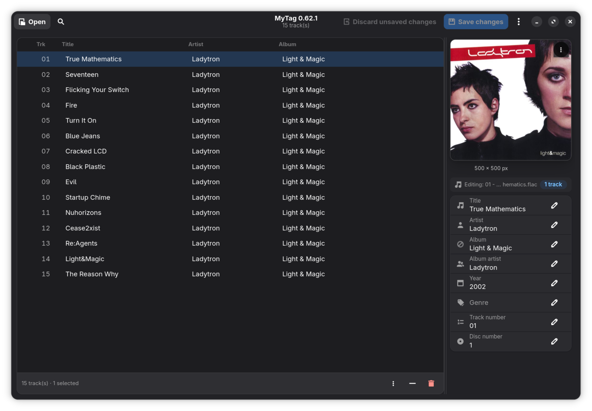

El editor de etiquetas y carátulas nativo para Linux
Rápido, enfocado y diseñado con GTK4 y Libadwaita. Edita metadatos por lotes con total seguridad, busca portadas en alta resolución e identifica canciones con AcoustID.

Por qué he creado MyTag
Nació de una necesidad real: gestionar mi biblioteca musical en Linux.
Escucho música sobre todo en mi reproductor portátil (DAP) y me gusta tener cada álbum bien etiquetado y con su portada. El problema era que en Linux nunca encontraba una herramienta que hiciera todo lo que necesitaba, y acababa arrancando Windows para usar Mp3tag.
Por eso creé MyTag. Empezó como una herramienta para uso propio y hoy está disponible como software libre para toda la comunidad.
Soporte para Album Artist
Muchos editores no gestionan bien esta etiqueta, y es importante para que los reproductores agrupen correctamente los recopilatorios y los álbumes con colaboraciones.
Portadas adaptadas a tu DAP
Algunos reproductores portátiles dan problemas o no muestran la carátula si la imagen es demasiado grande. MyTag permite redimensionarla con proporciones exactas antes de guardarla.
Todo desde Linux
Edición por lotes, búsqueda de portadas e identificación de pistas sin necesidad de cambiar de sistema.
Diseñado para amantes de la música
Sin reproductores innecesarios ni bibliotecas pesadas. Sólo una herramienta precisa y moderna para dejar tus archivos de audio impecables.
GTK4 & Libadwaita Nativo
Integración total con el escritorio Linux moderno (GNOME, Wayland y X11). Sigue automáticamente tu tema claro u oscuro y respeta la escala de fuentes de tu sistema.
Edición por Lotes Segura
Edita álbumes completos a la vez. Cuando hay valores discrepantes, MyTag lo indica con claridad y te permite unificarlos mediante un selector desplegable. Nada se guarda en disco sin tu confirmación.
Gestor Integral de Portadas
Busca carátulas en MusicBrainz e iTunes sin salir de la app. Arrastra y suelta imágenes, pega desde el portapapeles, redimensiona con proporciones exactas y exporta la portada a archivo.
Huella Acústica AcoustID
¿Canciones sin etiquetar o con nombres incorrectos? Identifica pistas automáticamente mediante su huella de audio con Chromaprint (fpcalc), sin registros ni claves API que configurar.
Comprobación de Integridad
Verifica en segundo plano los flujos de audio al cargar carpetas. Detecta archivos dañados o incompletos con alertas visuales inmediatas antes de guardarlos.
Renombrado & Listas M3U8
Renombra tus archivos según sus metadatos con patrones configurables (%track% - %title%), autonumera pistas con ceros opcionales y genera listas de reproducción estándar M3U8.
Elegante, funcional y claro
Cada elemento está ubicado pensando en la máxima eficiencia y comodidad de uso.
Vista principal: lista ordenada de pistas con indicadores de estado, panel inspector de carátula y etiquetas directas.
Compatibilidad amplia de formatos
Soporta las extensiones y estándares más populares manteniendo intacta la calidad del audio.
Free Lossless Audio Codec
Comentarios Vorbis nativos e inserción de carátulas sin pérdidas en bloques de imagen FLAC.
MPEG Audio Layer III
Marcos estándar ID3v2.4 completos y portadas incrustadas en marcos APIC frontales.
AAC & Apple Lossless (ALAC)
Átomos estándar de metadatos de audio de Apple e imágenes incrustadas de alta resolución.
Ogg Vorbis & Opus Audio
Etiquetas estándar Vorbis y portadas codificadas en bloques METADATA_BLOCK_PICTURE.
Instala MyTag en tu distribución
Elige el método de instalación que prefieras para tu sistema operativo Linux.
Paquete Flatpak Universal
La forma más recomendada. Incluye todas las dependencias aisladas, Chromaprint (fpcalc) y acceso a tu carpeta de música.
flatpak install mytag-0.63.0.flatpakPaquete para Debian, Ubuntu y derivados
Compatible con Ubuntu 24.04 LTS+, Linux Mint, Debian Trixie/Sid y sistemas basados en APT.
sudo apt install ./mytag_0.63.0-1_all.debPaquete RPM para Fedora y RHEL
Compatible con Fedora 40, 41, 42, Rawhide y distribuciones compatibles con DNF / RPM.
sudo dnf install ./mytag-0.63.0-1.noarch.rpmInstalación en Arch Linux / Manjaro
Instala el paquete binario precompilado con Pacman o compílalo tú mismo con makepkg:
sudo pacman -U mytag-0.63.0-1-any.pkg.tar.zstEjecutar desde el código fuente
Clona el repositorio oficial de GitHub y ejecútalo directamente con Python:
git clone https://github.com/maestebanc/MyTag.git
cd MyTag
./run.sh